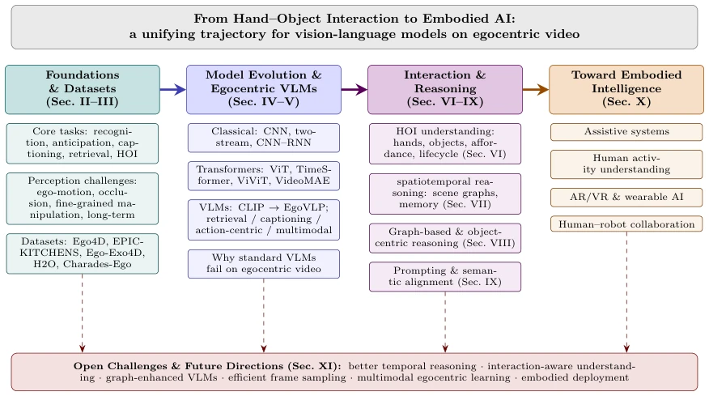
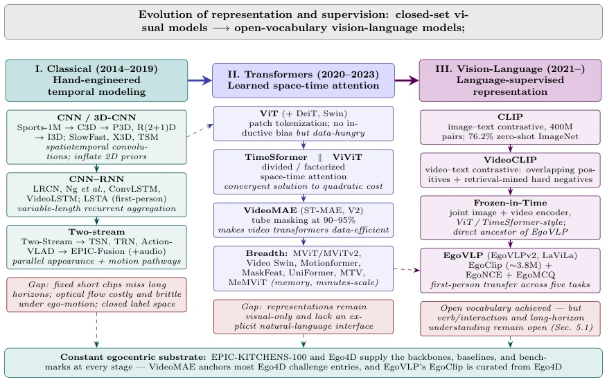
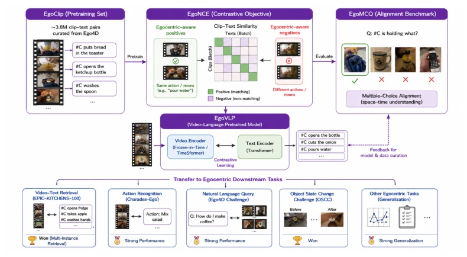
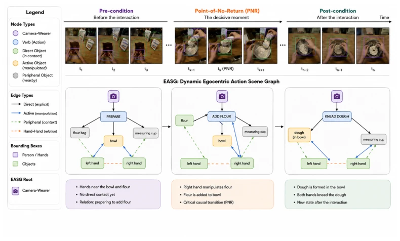
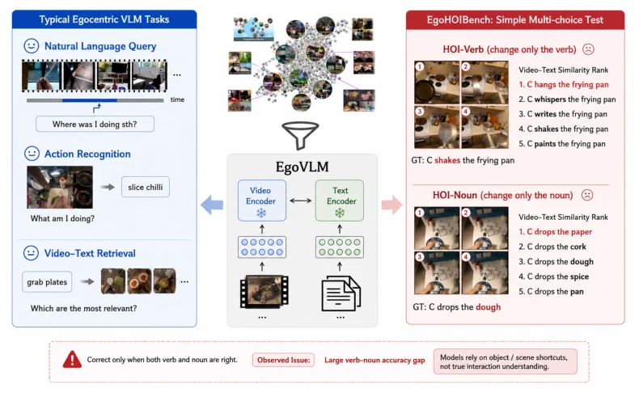
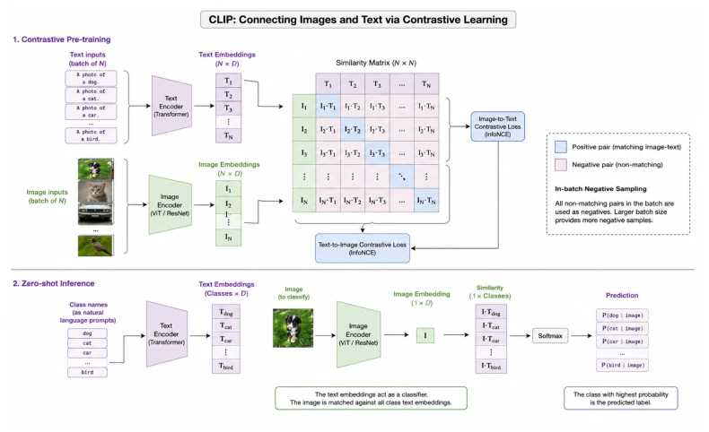
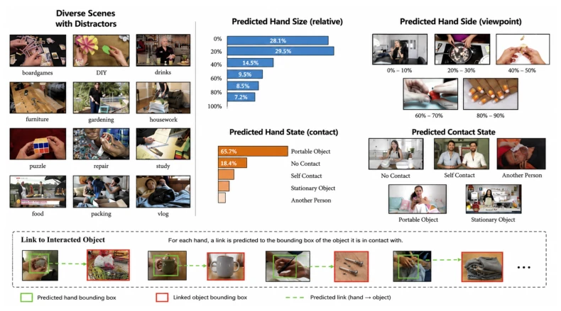
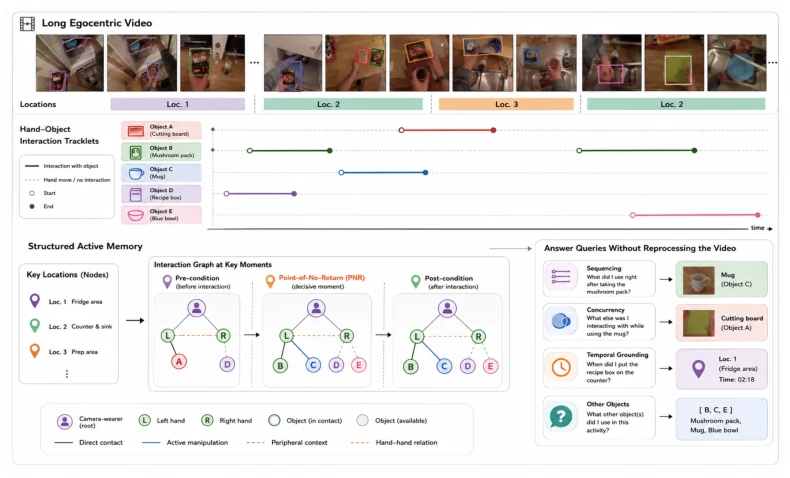

Although this review boasts a grand title, attempting to span from hand-object interaction to embodied intelligence, essentially it serves as a "check-up" on the "status quo" of VLMs in the Egocentric field. The authors are quite honest, directly stating that current models "recognize objects but not events", with long-video understanding capabilities even inferior to humans. Most interestingly, it elevates "graph structures" to the status of a first-class citizen, viewing this as the remedy for VLMs' inability to capture spatio-temporal relationships, yet this resembles more theoretical self-comfort, given that graph construction itself remains a significant pitfall in Egocentric scenarios. While it outlines the evolution from CNN to Transformer to VLM, the core contribution lies in identifying the absence of "relational reasoning", rather than proposing a new architecture. For those intending to apply this directly to robot strategies, this work serves more as a "pitfall avoidance guide" than an "operation manual".
First-person perspective (Egocentric) video is a natural bridge connecting human behavior and embodied intelligence, as it directly exposes the interaction details between hands and objects [3]. However, existing research faces huge challenges: data scale is far smaller than exocentric (Ego4D only 3670 hours vs. exocentric billions of pairs) [1], and there are serious issues of ego-motion blur, occlusion, and long-term temporal dependencies [10]. Existing VLMs like CLIP, although achieving open vocabulary, perform poorly in Egocentric scenarios, especially regarding verb and interaction relationship understanding [11]. For example, although EgoVLP performs well in retrieval tasks, its scores in long-video QA are far lower than humans [28]. Furthermore, traditional methods mostly focus on appearance recognition, lacking explicit modeling of spatio-temporal relationships. This paper aims to compensate for VLMs' shortcomings in relational reasoning by introducing graph structures (Scene Graphs, HOI Graphs) as an organizational principle, promoting the leap from perception to embodied action [1].

Figure 1: Roadmap of this survey. The paper is organized as a single trajectory from hand–object interaction to embodied AI. Foundations and datasets (Sec. 2–3) supply the substrate; the model lineage advances from classical and transformer architectures to egocentric vision-language models (Sec. 4–5); interaction and reasoning form the conceptual core, spanning hand–object interaction, spatiotemporal reasoning, graph-based reasoning, and prompting and semantic alignment (Sec. 6– 9); and these converge on applications toward embodied intelligence (Sec. 10). Open challenges (Sec. 11) cut across every stage, shown by the dashed feedback links.
This paper does not propose a new model, but constructs a survey framework spanning from hand-object interaction to embodied intelligence. The overall process is divided into four major sections: Basics and Datasets, Model Evolution, Interaction and Reasoning, Embodied Applications. 1. Data and Tasks: Reviews core datasets such as Ego4D, EPIC-KITCHENS, pointing out their geographical and annotation biases [10]. Defines five core tasks such as action recognition, anticipation, captioning [2]. 2. Model Evolution: Reviews the evolution from CNN (C3D, I3D) to Transformer (ViT, TimeSformer) to VLM (CLIP, EgoVLP) [4]. Points out that VLMs solve the fixed label space problem through natural language supervision, but Egocentric-specific architectures (e.g., EgoVLPv2) need to fuse spatio-temporal attention [7]. 3. Reasoning Core: Emphasizes the role of graph structures. Includes scene graphs (EASG) and hand-object interaction graphs, used for modeling spatio-temporal semantic relationships [118]. Proposes graph-based frame sampling and prompt engineering to enhance semantic alignment [9]. 4. Embodied Applications: Covers assistive systems, human-robot collaboration, etc., emphasizing long-term reasoning and cross-domain generalization as future keys [1]. Figure 1 illustrates this roadmap, while Figure 2 and Figure 4 explain model evolution and EgoVLP architecture respectively.

Figure 2: Evolution of video understanding models (Section 4). Three eras, read left to right, each inheriting representational machinery from the preceding era while changing its temporal modeling and supervision strategy. Classical models hand-engineer temporal structure through spatiotemporal convolutions, recurrent aggregation, and parallel appearance–motion streams (Section 4.1). Trans- former models replace those inductive biases with factorized space-time attention, made trainable at video scale by masked pretraining (Section 4.2). Vision-language models replace the fixed label space itself with natural-language supervision, a lineage running CLIP →VideoCLIP →Frozen- in-Time →EgoVLP. Red boxes mark the gap each era left open and the next set out to close; the horizontal dashed links

Figure 4: The EgoVLP framework: the EgoClip pretraining set curated from Ego4D, a space- time video-language model trained with the EgoNCE objective, and the EgoMCQ development benchmark, with transfer to egocentric downstream tasks. Illustration inspired by [6].

Figure 7: Egocentric Action Scene Graph (EASG). An interaction is represented as a temporally evolving graph rooted at the camera-wearer node. Verb (action) nodes connect to direct objects, while the manipulated object is linked via active edges to the acting hands. Peripheral objects provide contextual relations. The graph is grounded by bounding boxes on the pre-condition, point- of-no-return (PNR), and post-condition frames, capturing both spatial hand–object relations and their evolution over time. Illustration inspired by [118].
As a survey, this paper evaluates the field status quo by citing existing benchmarks. Main evaluations include EgoSchema long-video QA, results show large models score below 33%, while humans are about 76% [28]. EgoHOIBench diagnostics show models have a huge accuracy gap on verb-noun combinations, exposing the superficiality of interaction understanding [11]. Dataset comparative analysis (Table 3) reveals differences between Ego4D and EPIC-KITCHENS in scale, naturalness, and annotation richness, pointing out that H2O, although finely annotated, has a small scale [39]. Regarding ablation and findings, the authors point out that introducing memory enhancement (e.g., MeMViT) can improve long-term understanding, but most systems still rely on appearance shortcuts rather than real reasoning [37]. Figure 5 intuitively displays failure cases of models in fine-grained interaction.

Figure 5: The EgoHOIBench diagnostic. A model must select the correct caption from candidates that differ by only a single verb or noun, scoring a trial correct only when both are right; egocentric video-language models exhibit a large verb–noun accuracy gap, revealing only superficial hand– object interaction understanding. Illustration inspired by [11].
其他图片Other Figures

Figure 3: The CLIP framework. (Left) Contrastive pretraining jointly aligns an image encoder and a text encoder over batches of image-text pairs; (right) zero-shot prediction constructs a classifier from natural-language prompts. Illustration inspired by [5].

Figure 6: The 100DOH hand-object detector. For each hand it jointly predicts a bounding box, side (left/right), contact state (none, self, other-person, portable, or non-portable), and a link to the box of the object in contact, recovering the active object among many distractors. Illustration inspired by [26].

Figure 8: Interaction-aware temporal modeling in egocentric video. Hand–object interaction track- lets extracted from long videos are organized into a structured active memory indexed by inter- action events and locations. This representation supports efficient temporal reasoning—including sequencing, concurrency, temporal grounding, and retrieval—without reprocessing the full video. Interaction-aware representations and graph-guided frame selection further improve long-horizon reasoning by using hand–object structure as the scaffold for temporal understanding. Illustration inspired by [122].